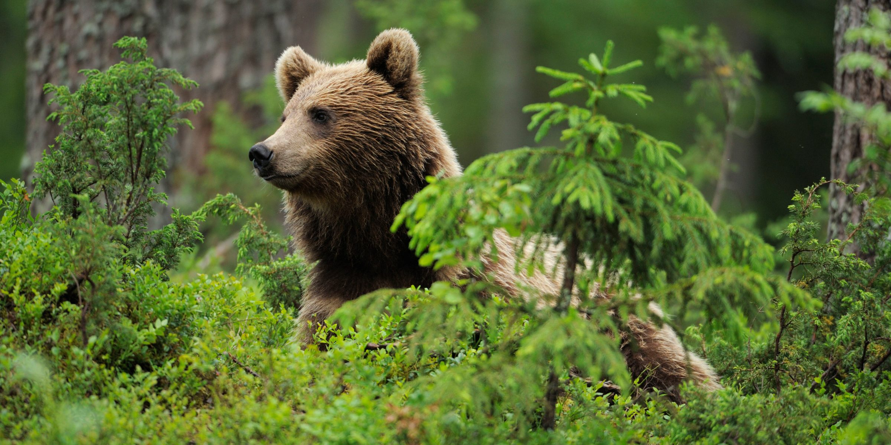
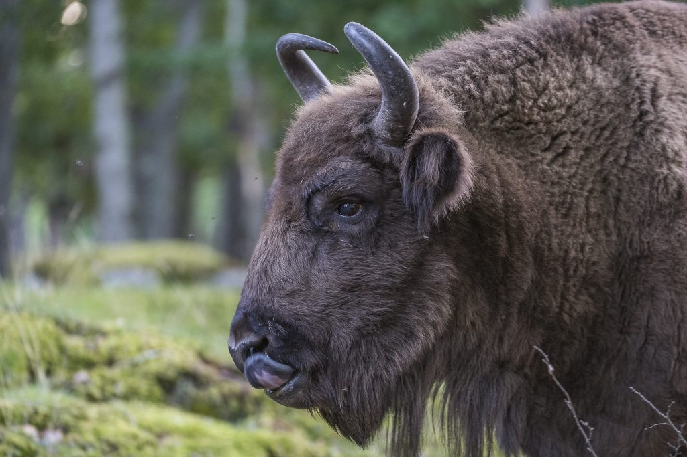
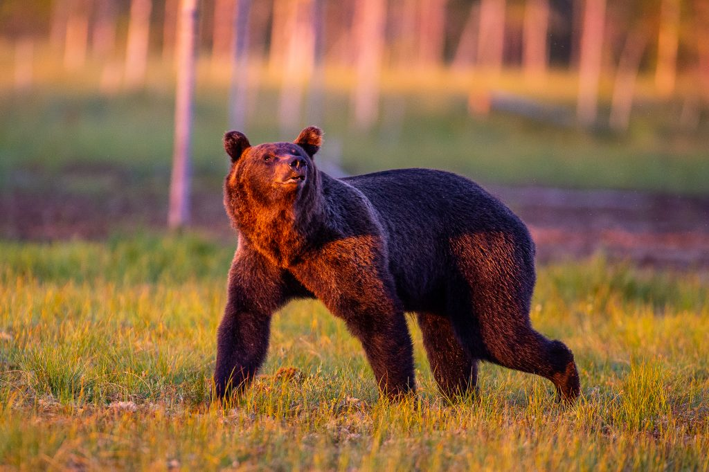
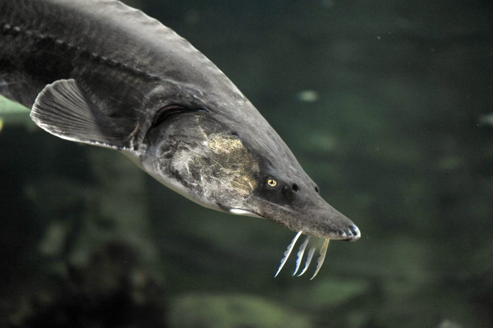
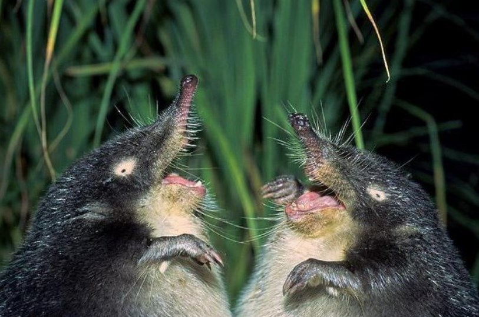

Унікальні тварини України хто вони і як їх оберігають?
Настають теплі місяці року, і нас все більше тягне на природу. У лісі, горах чи степу трапляється багато тварин, птахів або ж їхніх слідів. Дика природа демонструє нам багато цікавого, тож ми вирішили познайомити вас з унікальними тваринами України. Можливо, тепер ваші подорожі стануть ще яскравішими
Зубр – найбільша і найважча тварина Європи
Зубри – це великі та могутні бики. Вони зникли в дикій природі на початку XX століття і залишилися лише в зоопарках. У Червоній книзі їхній статус так і звучить – «зниклий в природі». У 1923 році було створено Міжнародне товариство з охорони зубра, яке відшукало 53 особини в неволі. Саме вони й стали родоначальниками усіх сучасних зубрів біловезького підвиду, тобто тих, що знову живуть у нас в природі.
На сьогодні в Україні мешкає приблизно 200 зубрів. Окремі популяції збереглися на Волині, Вінниччині, Київщині, Сумщині та в Карпатах.
Зубри тримаються невеликими родинами або стадами (до 50 особин). Старі самці живуть поодинці, приєднуючись до гурту лише під час гону. Зубр живиться травою, листям, пагонами й гілками дерев та чагарників, корою, а також добре їсть сіно.
В Україні ви можете спостерігати їх у НПП «Сколівські бескиди», адже саме там науковці займаються відродженням популяції цього виду ще з 2005 року. На сьогодні зубрів у парку понад 30 особин. Живуть вони в природі, проте працівники парку їх доглядають та підгодовують, бо традиційно зубри здійснювали значні міграції, щоб прогодувати себе, а тут ведуть здебільшого осілий спосіб життя. Завітайте до Сколівських бескидів, щоб побачити їх на власні очі!
Ведмідь – найбільший хижак Карпат
Хтось його боїться, хтось захоплюється, хтось його захищає, а хтось навіть не здогадується, що він є в Україні. Ведмідь може стояти на двох лапах, ходити на п’ятах, збирати ягоди своїми «пальцями» та піклуватися про малят, як і ми.
Бурі ведмеді можуть виростати до величезних розмірів: самки – до 200 кг, а самці – до 350 кг. Найбільший з них був зафіксований у Румунії і важив майже 500 кг. Раціон ведмедів змінюється залежно від сезону: від трави й пагонів навесні, ягід і яблук влітку до горіхів і слив восени. Крім того, харчуються корінням, комахами, рептиліями, ссавцями та, звичайно ж, медом.
В Україні ведмеді трапляються в основному в Карпатах, де їх живе приблизно 200 особин. І вони перебувають під охороною Червоної книги України. Взагалі вважається, що на всій території Карпат проживає майже 8000 бурих ведмедів. І це друга за величиною популяція виду в Європі.
Ведмідь є пріоритетним видом для збереження. Беручи до уваги залежність ведмедів від великих природних територій, вони є важливими індикаторами для низки інших видів диких тварин. Саме тому й охороняються багатьма міжнародними документами – Бернською конвенцією, Директивою ЄС про оселища тощо.
WWF працює над тим, щоб вивчити популяції бурих ведмедів в Україні та навчити людей співіснувати з цими велетнями в гармонії.
Види ведмедів:
- бурі медведі;
- чорні;
- білі;
- гімалайскі;
- очковие;
- губачі;
- біруангі;
Білуга – найбільша прісноводна риба на Землі
Осетрові – одні з найдавніших риб у світі. Вони з’явилися майже 200 мільйонів років тому і пережили динозаврів. Білуга – один з видів осетрових риб, викопні рештки якого датовані пліоценом!
Розпоідь о Булігах
Білуги мають надзвичайно довгий цикл життя, самки досягають зрілості майже як і люди – у віці 15–16 років. І живуть так само довго, як і люди, – деякі особини є справжніми довгожителями, досягнувши віку 100 років! Попри таку тривалість життя, у Чорному морі на сьогодні збереглося лише дунайське стадо білуги.
Хоча в Дністрі та Дніпрі ще є життєздатні популяції стерляді, а у північно-західному Причорномор’ї та Азовському морі досі можна зустріти незначні популяції севрюги та осетра російського. Усі вони разом з білугою та зниклими шипом та осетром європейським занесені до Червоної книги України.
А причинами зникнення є браконьєри на чорну ікру, втрата оселищ та перешкоди, наприклад, дамби на шляху до розмноження. WWF в Україні здійснює проект LIFE+ «Життя дунайським осетровим». Один з його важливих напрямків – робота з риболовецькими громадами: інформаційна робота, розробка плану альтернативних доходів. Взаємодія з контролюючими органами, особливо тими, що забезпечують транскордонний контроль. І, звичайно, надважливо працювати зі споживачами, адже саме їхній свідомий вибір грає ключову роль у збереженні диких осетрових.
Хохуля руська – найстаріший звір Європи
Хохуля є живим свідком мамонтів. Вважається найдавнішим, за віком викопних зразків, звіром серед усіх представників сучасної фауни Європи. Вона є близьким родичем кротів та пристосувалася до життя у воді.
Хоча раніше і була розповсюджена по всій Європі, але зараз трапляється лише у лісовій та лісостеповій зоні Східної Європи. Населяє басейни Волги, Дону, Дніпра, Уралу та Обі. Хоча на цей час в Україні проживає лише одна популяція з 300–500 особин – у районі р. Сейм.
Саме тому хохуля руська перебуває під охороною: в Україні – Червоної книги, у світі – Червоного списку Міжнародного союзу охорони природи. Одним з можливих шляхів збереження виду в Україні є організація спеціалізованих хохулевих заказників.
Тварини які входять до Червоної книги України:
- Гадюка степова
- Гіпаніс складчастий
- Дельфін звичайний
- Дятел білоспинний
- Жаба прудка
- Журавель сірий
- Заєць білий
- Зубр
- Їжак вухатий